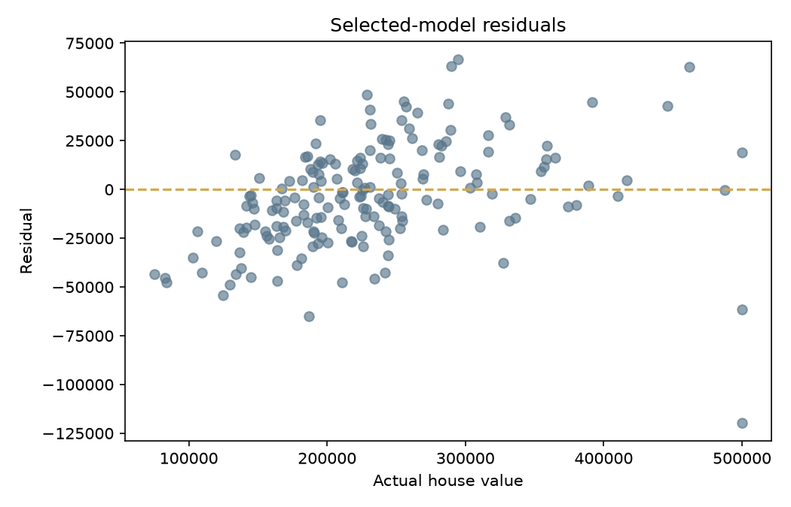

Project analytics dashboard
Housing value model performance
Explore input coverage, spatial distribution, and held-out model evidence.
Sample spatial distribution
longitude × latitudehigher-value sampleother samplesynthetic offline fallback
Model comparison
lower RMSE winsFinding: the simpler Ridge pipeline was selected because it generalized better than the tuned gradient candidate.
900records
2models compared
3derived ratios
Residual diagnostic
selected model · held-out data